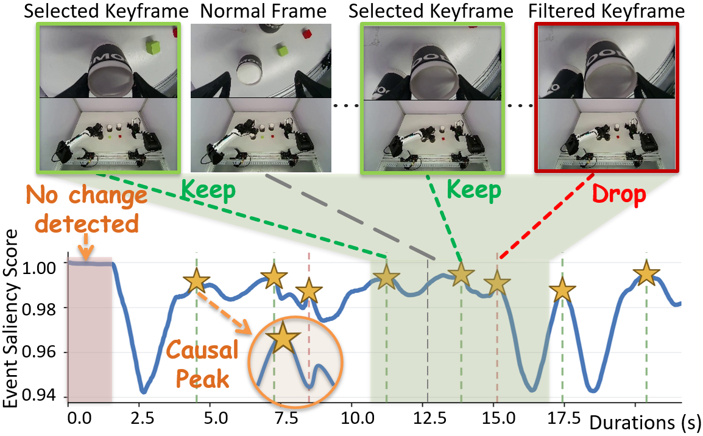

论文信息
一句话：KEMO 是五篇中最贴近 VLA 历史关键事件检测的工作。它不保存稠密轨迹，也不依赖在线任务分解：先用机器人运动学显著性提出关键帧，再以视觉去重确认，并把有序 memory token 注入 π0.5。论文在六个真实双臂任务上报告 TSR 由 27.8% 提升至 51.4%，SCR 由 42.3% 提升至 76.4%。
1. 核心摘要
KEMO 是五篇中最贴近 VLA 历史关键事件检测的工作。它不保存稠密轨迹，也不依赖在线任务分解：先用机器人运动学显著性提出关键帧，再以视觉去重确认，并把有序 memory token 注入 π0.5。论文在六个真实双臂任务上报告 TSR 由 27.8% 提升至 51.4%，SCR 由 42.3% 提升至 76.4%。
2. 研究动机
长程操作中，当前画面可能在不同阶段相似；正确动作取决于此前是否已完成放置、覆盖、补充或替换。固定间隔采样将存储浪费在静态帧，近期窗口会丢失早期转移。作者认为真正决定进度的是少数交互状态变化的 keyframe。
3. 方法论

原论文总览图（arXiv LaTeX 源码 assets/overview.png）。由 Keyframe Detector、Keyframe Memory Module、VLA Backbone 与 Memory Integration Module 构成。
整体架构与执行流程
KEMO 从最近关节位移构造 motion saliency；运动减慢处形成候选局部峰。候选帧再与最近已接受关键帧比较视觉差异，过滤视觉重复的停顿。保留帧经视觉编码器压成时间有序 memory tokens；current visual tokens 对 memory 进行 masked cross-attention，以 gated residual 融合后进入 VLA backbone 并输出 action chunk。论文还提高事件关键帧附近样本的训练权重，使训练目标与记忆选择对齐。
关键帧检测细节

原论文关键帧检测图（LaTeX 源码 assets/keyframe_detection.png）：运动学显著性候选、因果峰值检测与视觉过滤。
4. 实验与结果
真实双臂六任务、每任务 12 次试验，任务含 2–6 个计分子阶段，平均 28–95 秒、830–2846 步。相对无记忆 π0.5，TSR 增加 23.6 个百分点（27.8%→51.4%），SCR 增加 34.1 个百分点（42.3%→76.4%）。论文消融指出 event-driven selection 优于均匀采样和最近帧保留，门控融合与 keyframe-aligned loss 互补。
5. 优势与局限
| 优势 | 局限 / 迁移注意点 |
|---|---|
| 把“何时写入”变成可因果、低开销的检测问题，并以实际控制成功率验证。 | 2026 预印本，阈值、传感器频率、跨机器人泛化仍须复核；视觉去重不等于对象级状态理解。 |
6. 总结
最直接模板是 motion candidate + visual confirmation + ordered memory fusion。下一步可扩展为 appearance、object relation、contact、instruction 四路确认。
图像与来源说明
本页仅保留原论文的动机/方法图，实验结论以文字呈现。图像优先来自作者公开 LaTeX 源码；页面内图片为原图的网页展示转换，原始 PDF/PNG 文件也保存在本页 figures/ 目录。